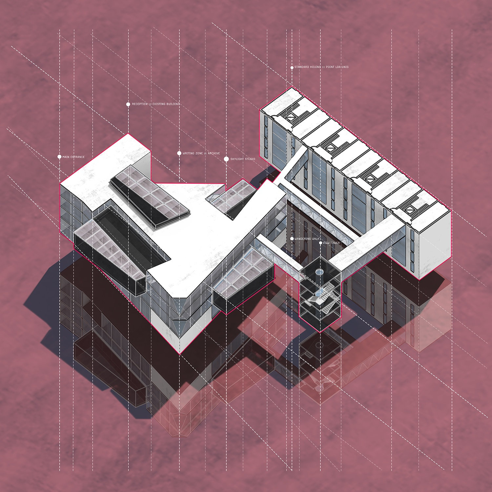
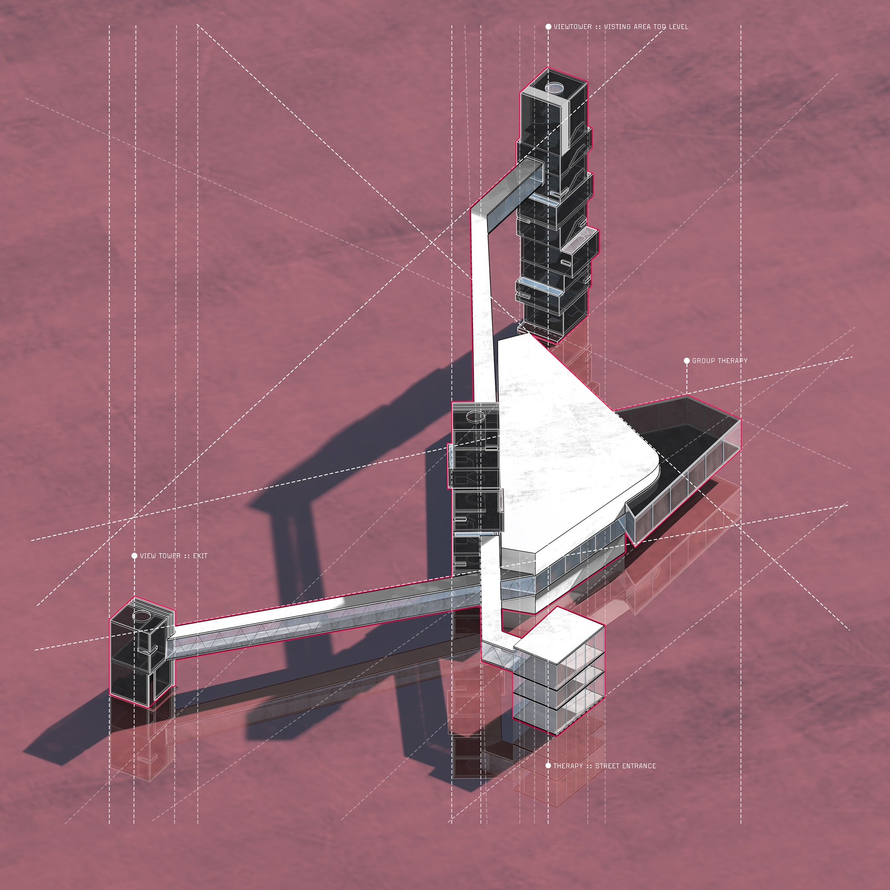
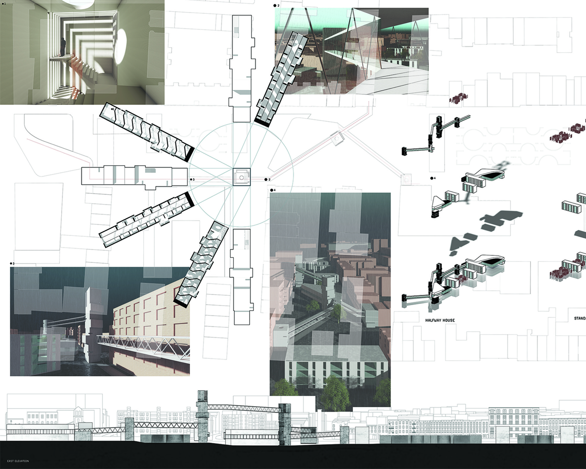
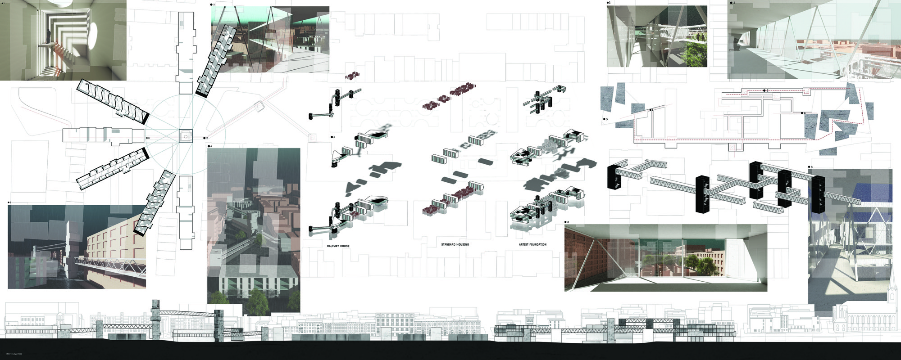

Projects
Idle Village
This masterplanning project is built on top of the BQE to bridge the two sides of the Brooklyn Queens Expressway. The project is driven by the idea of walking as meditation and embracing idleness as a way to heal the mind and body. Walking here is not meant to be just daily exercise but to cultivate the habit of reserving time for oneself — to not do anything, including any form of work.
The Idle Village challenges the urge to design for efficiency and redefines the relationship between work and idleness. It is a machine for healing, nurturing, and a device to investigate the separation between work and life. The site caps the BQE as a tunnel, patching the ground to reconnect the neighborhoods severed by the expressway. The project consists of an artist foundation, halfway houses, and housing for low-income workers. Its deliberate inefficiency — long walkways requiring occupants to travel from one place to another — is the practice of pausing: a way to reflect, regain control, and cultivate self-discipline.

Site plan: halfway house cluster (North), standard housing (center), and artist foundation (South) along the capped BQE.
Artist Foundation

Artist Foundation (South): studio and living pulled apart like a marshmallow. Gallery space open to the street.
Halfway House & Meditation Tower

Halfway House Cluster (North): meditation tower inspired by traditional bell towers. The ascending walkway curates views and elevation as the primary meditation space.
Walkways

Walkway system: plans, interior views, and site elevation. The single-strand walkways work as meditation space across the full length of the village.
Return to Projects